| Variable Name | Initial Value | Mathematical Symbol | Description |
|---|---|---|---|
| ans | 0 | The result of the previously evaluated expression | |
| e | 2.718281828 | The constant e, which is the base of the natural logarithm function ln() | |
| pi | 3.141592654 | 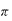 | The constant pi, which is the ratio of a circle's circumference to its diameter |
| Function Name | Parameters | Mathematical Symbol | Description |
|---|---|---|---|
| abs | x (decimal) | 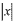 | Returns the absolute value of x. |
| acos | x (decimal) | 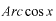 | Returns the measure of the arc whose cosine is x. |
| asin | x (decimal) | 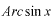 | Returns the measure of the arc whose sine is x. |
| atan | x (decimal) | 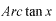 | Returns the measure of the arc whose tangent is x. |
| avg | x0, x1, ..., xn (decimals) | Returns the average of all parameters. Note: this function requires at least 2 parameters. |
|
| ceil | x (decimal) | Returns the largest integer that is greater than or equal to x. | |
| comb | n (whole number) r (whole number) |
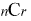 | Returns n! divided by r!(n - r)! |
| comp | a (any) b (same as a) |
Returns -1 if a is less than b, 0 if they are equal, or 1 if a is greater than b. In the case of strings, the comparison is alphabetical. | |
| cos | x (decimal) | 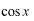 | Returns the cosine of x. |
| cot | x (decimal) | 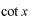 | Returns the cotangent (multiplicative inverse of tangent) of x. |
| csc | x (decimal) | 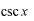 | Returns the cosecant (multiplicative inverse of sine) of x. |
| fact | x (whole number) | 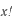 | Returns x multiplied by all whole numbers less than x. |
| floor | x (decimal) | Returns the largest integer that is less than or equal to x. | |
| ln | x (decimal) | 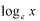 | Returns the natural log of x. |
| log | x (decimal) | 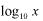 | Returns the log in base 10 of x. |
| lwcs | s (string) | Returns the string s converted to all lowercase characters. | |
| max | x0, x1, ..., xn (all decimals or all strings) | Returns the largest value of all parameters. Note: this function requires at least 2 parameters. |
|
| min | x0, x1, ..., xn (all decimals or all strings) | Returns the smallest value of all parameters. Note: this function requires at least 2 parameters. |
|
| perm | n (whole number) r (whole number) |
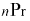 | Returns n! divided by (n - r)! |
| root | x (decimal) n (decimal) |
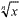 | Returns the nth root of x. |
| sec | x (decimal) | 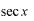 | Returns the secant (multiplicative inverse of cosine) of x. |
| sin | x (decimal) | 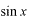 | Returns the sine of x. |
| sqrt | x (decimal) | 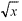 | Returns the square root of x. |
| substr | s (string) i (whole number) n (whole number) |
Returns a substring of string s of length n, beginning with zero-based character index i. | |
| tan | x (decimal) | 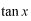 | Returns the tangent of x. |
| upcs | s (string) | Returns the string s converted to all uppercase characters. |